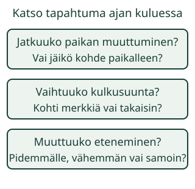

Mikä liikkeessä muuttui?
Aava huomaa lehden liikkuvan. Mutta jatkuuko sen liike koko ajan samalla tavalla?
Seuraan liikettä ja vertaan, mitä alussa ja myöhemmin tapahtuu.
Kokeile ensin pöydällä
Aikuinen siirtää paperipalaa pöydällä kirjan vieressä. Kirja pysyy paikallaan. Ensin paperi kulkee, sitten se jää paikoilleen: liike pysähtyi. Kokeilkaa myös liikuttaa samaa paperia kiveä kohti ja takaisin. Näin voi tutkia muutosta itse liikkumatta.
Havainnon tekeminen ja liikkeen huomaaminen ovat tämän tunnin esitietoja. Nyt katsomme tarkemmin, muuttuuko liikkuminen. Väri tai esineen nimi ei ratkaise vastausta.
Katso oikeasti muuttuvaa kuvaa
Kuvitteellinen malli: kamera ja vertailukivi pysyvät paikallaan.
Esitys tarvitsee JavaScriptin. Ilman sitä voit tehdä yllä olevan paperikokeilun.
Vertaa sitä, mitä kysytään
Veneen tapahtumassa on kolme osaa. Katso ensin koko tapahtuma ja valitse sitten kuhunkin sopiva kuvaus.
Katso ensin tapahtuma.
Apua seuraamiseen
Katso yhtä asiaa kerrallaan: jatkuuko paikan muuttuminen, vaihtuuko kulkusuunta vai ehtiikö kohde myöhemmin samassa katseluajassa pidemmälle? Toista tarvittaessa. Apuviiva näyttää alkuperäisen paikan; se ei ole mittayksikkö. Vastauksen saa antaa ilman ääneen vahvistamista.
Tämä on kuvitteellinen liikkeen malli. Se ei ole oikea lampivideo. Kiinteä merkki ja kamera pysyvät paikallaan. Kuvassa on yksi kohde.
Pysäytä toisto on katsomisen apu. Se ei muuta mallin tapahtumaa. Myös esityksen lopussa kuva jää näyttöön: se ei lisää malliin uutta pysähdystä.
Mitä esimerkit näyttävät?
1. Liike pysähtyy
Ensimmäisen tilanteen lehti kulkee aluksi kiveä kohti. Myöhemmin se jää samaan kohtaan, vaikka toisto jatkuu. Tämä on mallin tapahtuma: liike pysähtyi. Se on eri asia kuin katselun pysäyttäminen painikkeella.
2. Eteneminen nopeutuu
Toisen tilanteen lehti kulkee alussa hitaammin. Loppupuolella se etenee samassa ajassa pidemmälle. Se nopeutui. Pelkkä kiven lähellä oleminen ei kerro nopeutumisesta: vertaa etenemistä ajan kuluessa.
3. Kulkusuunta vaihtuu
Kolmannen tilanteen lehti menee ensin kiinteää merkkiä kohti ja sitten takaisin. Se liikkui myös palatessaan. Alku- ja loppupaikka voivat olla samat. Katso koko tapahtuma.
4. Hitaampi liike on yhä liikettä
Neljännessä tilanteessa eteneminen hidastuu. Kohde etenee myöhemmin samassa ajassa vähemmän, mutta sen paikka muuttuu edelleen. Hidas ja paikallaan eivät ole sama asia. Viidennessä tilanteessa sama etenemistapa jatkuu koko katsotun ajan.
Ennusta: pitääkö liikkeen muuttua, jotta kohde voi päästä lähemmäs kiveä? Katso viides tilanne.
Paljasta ajatus
Lähemmäs voi päästä myös liikkeen jatkuessa samalla tavalla.

Uusi tilanne: paperivene
Kuudennessa tilanteessa kohde on paperivene. Se kulkee, jää hetkeksi paikalleen ja lähtee takaisin. Järjestä havaintosi sanojen ensin, keskellä ja lopuksi avulla. Sama havaintotapa toimii, vaikka kohde vaihtuu.
Tutki lisää
Liikuttakaa paperia pöydällä ensin koko ajan samaan suuntaan ja sitten takaisin. Vaihtakaa katsojaa. Voiko toinen kertoa muutoksen osoittamalla, ilman sanoja nopeus tai suunta? Pysäyttäkää oma kokeilu rauhassa ja toistakaa tarvittaessa.
Opettajalle: oletukset ja rajat
Vuosiluokat 1–2. Vaadittu AND-ryhmä SCI-ENV-OBSERVE-01 ja ENV-PHY-MOTION-OBS-01. Niitä ei korvata tällä harjoituksella. Muutoksen syytä, voimia, kelloa, sekuntien laskemista, metrejä tai nopeusyksikköä ei vaadita. Aikuinen voi lukea kysymykset. Fyysinen tekeminen on valinnainen; osoittaminen ja katsominen riittävät osallistumiseen.
Malli on ennalta määrätty paikan funktio. Nopeutuva ja hidastuva esimerkki muuttuvat kahden tasaisen etenemisjakson välillä. Suunnanvaihto on idealisoitu: siitä ei päätellä kääntymisen voimaa tai tarkkaa hetkellistä nopeutta. Kysymykset nimeävät vertailtavan ominaisuuden. Kääntyminen ei ole väite siitä, ettei samalla voisi tapahtua muita muutoksia.
Toisto kulkee yhdellä ajalla, pysähtyy tauolla eikä ota piilotetun välilehden aikaa kiinni. Apuviiva ei muuta mallia tai vastauksen ehtoa. Kuvasarjojen lukemista ei käytetä havainnoinnin korvikkeena. Näyttöön jäävä viimeinen kuva ja toiston tauko erotetaan mallin fyysiseksi tarkoitetusta pysähdyksestä.
Harjoitus tarkistaa rajatun mallin kuvauksen. Se ei osoita koko tapahtuman katsomista, itsenäistä luonnon havainnointia, pysyvää osaamista tai oppimisvaikutusta. Ei pisteitä, tallennusta tai muodollista hallintanäyttöä. Todellinen havainnointi ja perustelu tarkastellaan erikseen.
Lopuksi
Näytä yksi kohta, jossa liike muuttuu. Mitä vertasit alun ja myöhemmän kohdan välillä?